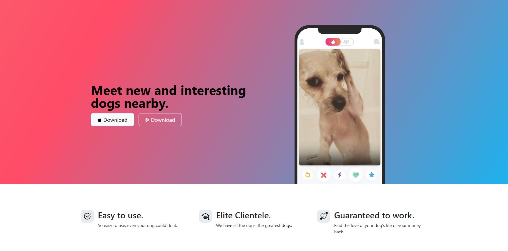
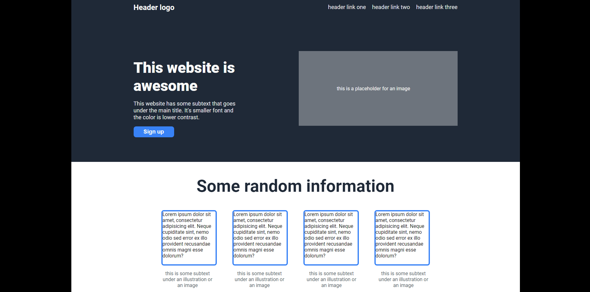

Tindog
Had great fun finishing this awesome Project with the Bootstrap Framework in the Course with Dr. Angela Yu- total recommendation if you're trying to get into Web Development!

Move it
The first Website i made with Examples from the Bootstrap Framework. I am enjoying being able to get a Website quickly up and running if i need to.

Landing Page
This is one of the first bigger Projects i ever did - all the alignments pretty much are done using Flexbox. It was part of the Curriculum from The Odin Project.